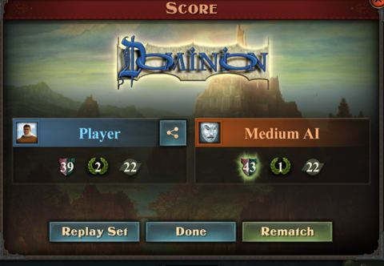
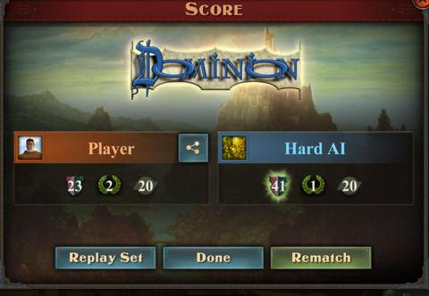
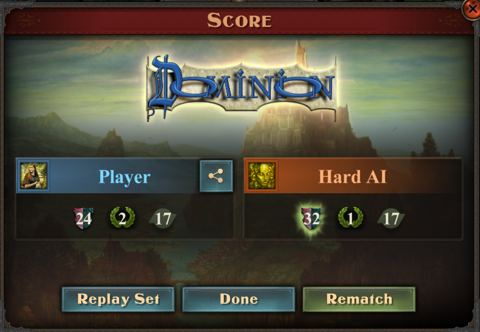
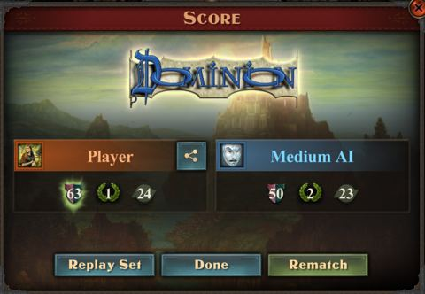
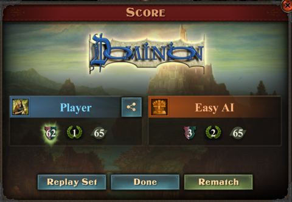

Stats
The autopilot (model k1-steam) plays the
built-in computer opponents, from Very Easy up to Hard, on the game's random base-set kingdoms. After every game this
page is rebuilt from autopilot/stats/games.jsonl: who won, by how much, and what the model had trouble with.
Updated 2026-11-13 21:53.
What the campaign shows
Written after the first full campaign (12 games, 11 finished, model k1-steam, random base-set
kingdoms). The tables below are recomputed after every game; this summary was written from them, and the numbers in it
come from the same file.
1. Difficulty: wins stop at Medium
- Very Easy and Easy: 4 of 4 clean games won. The one Very Easy loss (game 2) was caused by an autopilot bug, not the model (see below).
- Medium: 1 of 2 clean games won (63–50, then a 39–43 loss). The other Medium loss (game 6, 30–31) was also hit by the same autopilot bug.
- Hard: 0 of 3, all clean losses, by about 2, 8 and 18 points. A fourth Hard game was lost to a crash of the game itself (the computer's disk filled up), not counted.
- The stronger opponents end the game early. Against Hard, games took 17–23 turns. Against Very Easy and Easy they took 28–65. The model's deck is built for a slow money game, and Medium and Hard finish the Provinces before it catches up.
2. The model plays almost pure Big Money
- On average 6 of the 10 kingdom cards in a game were cards this model never learned or isn't allowed to
buy.
k1-steamwas evolved on one fixed 10-card kingdom, so Witch, Militia, Moat, Council Room, Bandit, Bureaucrat, Gardens and the second-edition cards are invisible to it. - Even among the cards it knows, it bought action cards in only 5 of 11 games: one Smithy in three games, five Merchants in one game, and a Village, Festival, Moneylender and Laboratory once each. Everything else was treasure and Victory cards.
- So kingdoms with strong engines or attacks favour the opponent. The model can't take part in them.
3. Cards
- Adjusted for opponent level, all four attack cards come out below average: Bureaucrat −17 points, Bandit, Militia and Witch −12 each. But that's mostly one game (game 12, a Medium loss with all four in the kingdom). With 3–7 games per card these are hints, not measurements.
- Witch was in 4 games and only one was won (against Easy). The model never buys Witch or Moat, so it takes the Curses without an answer.
- Militia attacks were answered 21 times across the campaign (discarding by the model's own Militia order). Militia games went 3 won, 2 lost, and one of those losses was the bug game.
- Kingdoms with Smithy did best (+17 points over level average). Smithy is the one action card the early buy list wants first.
4. A known weak spot: long late games
- When a game drags on (46 and 65 turns against the easiest opponents), the late buy list fills the deck with Estates and Copper and prefers Silver to Gold. $8 hands become rare, and only the weak opponent saved those games. The model was trained with a 40-turn cap, so it never faced this.
5. Autopilot problems found and fixed during the campaign
These are problems of the screen-reading autopilot, not the model. Each one was found in a real game, fixed, and is counted in the Problems columns:
- Attack prompts hidden under the played cards: Militia's "Discard 2 cards" is covered by the big card, so the autopilot reads the attack card's name instead, and tells your own turn from the buttons.
- Stacked hands: with 6+ cards (after an opponent's Council Room), duplicates are shown as one card with a count badge, and a click selects one copy. The autopilot reads the badges, presses OK only when it is green (enabled), and otherwise adjusts the selection (8 times).
- Clicks that don't register (26 retries) and covered counters (17 times, then the coins are counted from the hand). Twice early on, a missed click was taken for an empty pile, so Gold or Silver was never bought again. That cost games 2 and 6 and led to the rule that a pile is only empty when it shows its red X.
- A crash of the game when the disk ran full (outside the autopilot). The game had to be restarted, and the autopilot learned to work with the window's title bar.
What would help most
- A model that knows the whole base set, with a stronger late game. For example the dominion-v1 model that covers Witch,
Militia, Moat and Moneylender (
k4-20260614) could play the same campaign for a direct comparison. - More games per level: a few per level are enough to see the trend, not to rank cards.
Findings so far (computed)
- 12 games so far (11 finished): 5 won, 6 lost.
- Very Easy: 2 of 3 won (67%), about 35 turns per game, 2.7 attacks answered and 7.3 problems per game.
- Easy: 2 of 2 won (100%), about 46 turns per game, 2.0 attacks answered and 13.5 problems per game.
- Medium: 1 of 3 won (33%), about 21 turns per game, 3.0 attacks answered and 3.3 problems per game.
- Hard: 0 of 3 won (0%), about 20 turns per game, 0.0 attacks answered and 2.8 problems per game.
- Below the level average when present (at least 2 games): Bureaucrat -17 pts (n=4); Bandit -12 pts (n=4); Chapel -12 pts (n=5); Militia -12 pts (n=5).
- 1 game(s) couldn't be finished by the autopilot (see the game list).
- 2 game(s) were hurt by an autopilot bug, not by the model (marked in the game list; the bug was fixed afterwards). The 'without bug-hit games' column leaves them out.
- Samples are small: a few games per level. Treat card win rates as hints, not measurements.
By opponent level
| Level | Games | Won | Lost | Not finished | Win rate | Win rate without bug-hit games | Avg turns | Avg minutes | Attacks answered / game | Problems / game |
|---|---|---|---|---|---|---|---|---|---|---|
| Very Easy | 3 | 2 | 1 | 0 | 67% | 35 | 22 | 2.7 | 7.3 | |
| Easy | 2 | 2 | 0 | 0 | 100% | 46 | 25 | 2.0 | 13.5 | |
| Medium | 3 | 1 | 2 | 0 | 33% | 21 | 12 | 3.0 | 3.3 | |
| Hard | 4 | 0 | 3 | 1 | 0% | 20 | 9 | 0.0 | 2.8 |
Win or loss comes from the score screen's placement laurels (always read correctly so far). Turns = the score panel's turn count. Problems exclude hand misreads that a second read fixed and attacks answered normally (those are counted in their own column). What counts: unknown prompts, generic answers, selections that needed adjusting, unreadable counters, empty piles, missing buttons, games given up.
By kingdom card
Each base-set card that has appeared: win rate in finished games with it in the kingdom vs without it, and how many problems named it. vs level average: how much more or less often it won than the usual win rate at the same opponent levels (games hit by autopilot bugs left out), so a card that only turned up against Hard isn't blamed for Hard being hard. Sorted by that (worst first). unknown = the model never learned the card and never buys it.
| Card | Games with it | Win with | Win without | vs level average | Problems naming it | Model | Levels |
|---|---|---|---|---|---|---|---|
| Bureaucrat attack | 4 | 25% | 57% | -17 pts | 0 | unknown | Easy 1, Medium 2, Hard 1 |
| Bandit attack | 4 | 75% | 29% | -12 pts | 0 | unknown | Very Easy 1, Easy 2, Medium 1 |
| Chapel | 5 | 40% | 50% | -12 pts | 0 | knows | Very Easy 2, Easy 1, Hard 1, Medium 1 |
| Militia attack | 5 | 60% | 33% | -12 pts | 0 | unknown | Very Easy 2, Easy 2, Medium 1 |
| Witch attack | 4 | 25% | 57% | -12 pts | 0 | unknown | Easy 1, Hard 2, Medium 1 |
| Workshop | 5 | 40% | 50% | -12 pts | 0 | unknown | Very Easy 1, Easy 2, Hard 1, Medium 1 |
| Council Room | 6 | 33% | 60% | -10 pts | 0 | unknown | Very Easy 2, Medium 2, Hard 2 |
| Artisan | 3 | 67% | 38% | +0 pts | 0 | unknown | Very Easy 3 |
| Cellar | 3 | 67% | 38% | +0 pts | 0 | unknown | Very Easy 1, Easy 1, Hard 1 |
| Harbinger | 4 | 75% | 29% | +0 pts | 0 | unknown | Very Easy 1, Easy 2, Hard 1 |
| Laboratory | 2 | 50% | 44% | +0 pts | 0 | knows | Very Easy 2 |
| Market | 7 | 43% | 50% | +0 pts | 0 | knows | Easy 2, Medium 2, Hard 3 |
| Mine | 4 | 25% | 57% | +0 pts | 0 | knows | Medium 3, Hard 1 |
| Moat | 3 | 33% | 50% | +0 pts | 0 | unknown | Easy 1, Medium 1, Hard 1 |
| Remodel | 5 | 20% | 67% | +0 pts | 0 | unknown | Very Easy 1, Easy 1, Medium 1, Hard 2 |
| Sentry | 2 | 50% | 44% | +0 pts | 0 | unknown | Easy 1, Hard 1 |
| Throne Room | 2 | 100% | 33% | +0 pts | 0 | knows | Very Easy 2 |
| Vassal | 3 | 67% | 38% | +0 pts | 0 | unknown | Very Easy 1, Medium 2 |
| Village | 4 | 25% | 57% | +0 pts | 0 | knows | Very Easy 1, Medium 1, Hard 2 |
| Gardens | 7 | 43% | 50% | +10 pts | 0 | unknown | Very Easy 2, Easy 1, Medium 2, Hard 2 |
| Merchant | 6 | 50% | 40% | +10 pts | 0 | knows | Very Easy 2, Easy 1, Medium 1, Hard 2 |
| Festival | 5 | 40% | 50% | +12 pts | 0 | knows | Very Easy 1, Medium 2, Hard 2 |
| Moneylender | 5 | 40% | 50% | +12 pts | 0 | knows | Very Easy 2, Medium 1, Hard 2 |
| Poacher | 6 | 33% | 60% | +12 pts | 0 | unknown | Very Easy 2, Medium 2, Hard 2 |
| Smithy | 3 | 67% | 38% | +17 pts | 0 | knows | Easy 1, Medium 1, Hard 1 |
| Library | 3 | 67% | 38% | +25 pts | 0 | unknown | Very Easy 1, Medium 2 |
Prompts it didn't understand
None yet.
Every game
vs Medium AI: loss points ≈ 39–43 (OCR; the screen below is the record)
Kingdom: Chapel, Vassal, Workshop, Bureaucrat, Militia, Bandit, Council Room, Market, Mine, Witch
Model doesn't know: Vassal, Workshop, Bureaucrat, Bandit, Militia, Council Room, Witch
Bought: 8 Silver, 7 Copper, 6 Estate, 4 Gold, 4 Province, 3 Duchy
- turn 6: attack_answered
- turn 9: attack_answered
- turn 10: attack_answered
- turn 12: attack_answered
- turn 13: attack_answered
- turn 15: attack_answered
- turn 17: attack_answered
- turn 18: attack_answered
- turn 19: empty pile noticed: Duchy
- turn 20: attack_answered

vs Hard AI: loss points ≈ 23–41 (OCR; the screen below is the record)
Kingdom: Cellar, Harbinger, Bureaucrat, Gardens, Moneylender, Poacher, Council Room, Market, Mine, Witch
Model doesn't know: Cellar, Harbinger, Bureaucrat, Poacher, Gardens, Council Room, Witch
Bought: 7 Copper, 7 Silver, 5 Gold, 4 Estate, 4 Province, 1 Duchy
- turn 16: hud_unreadable

vs Hard AI: abandoned points ≈ ?–? (OCR; the screen below is the record)
Kingdom: Smithy, Bandit, Market, Mine, Artisan, Chapel, Merchant, Workshop, Militia, Remodel
Model doesn't know: none
Bought:
- turn 14: game abandoned (game crashed)
Note: the computer's disk filled up (not caused by the autopilot); the game's save failed with an internal assertion and the game closed at turn 14 - not counted as a result
vs Hard AI: loss points ≈ 24–32 (OCR; the screen below is the record)
Kingdom: Chapel, Merchant, Village, Workshop, Gardens, Moneylender, Remodel, Festival, Market, Sentry
Model doesn't know: Workshop, Remodel, Sentry, Gardens
Bought: 7 Copper, 7 Silver, 5 Gold, 3 Estate, 3 Province, 1 Duchy
- turn 7: hud_unreadable
- turn 10: buy_retry
- turn 12: hud_unreadable
Note: turn 1: counters unreadable and the fallback coin count was wrong ($7 instead of at most $5), so the opening buy (Duchy) failed - one card lost; the fallback was fixed during this game (minor, not counted as a bug-hit game)

vs Hard AI: loss points ≈ 33–35 (OCR; the screen below is the record)
Kingdom: Moat, Merchant, Village, Poacher, Remodel, Smithy, Council Room, Festival, Market, Witch
Model doesn't know: Poacher, Remodel, Moat, Council Room, Witch
Bought: 9 Silver, 7 Copper, 5 Province, 4 Estate, 3 Gold, 3 Duchy, 1 Smithy
- turn 10: hud_unreadable
- turn 12: coins_disagree
- turn 13: hud_unreadable
- turn 16: hud_unreadable
- turn 17: expected button missing (Play Treasures/Treasures)
- turn 17: buy_retry

vs Medium AI: win points ≈ 63–50 (OCR; the screen below is the record)
Kingdom: Merchant, Vassal, Gardens, Moneylender, Poacher, Smithy, Festival, Library, Market, Mine
Model doesn't know: Vassal, Poacher, Library, Gardens
Bought: 8 Copper, 8 Province, 7 Silver, 4 Duchy, 3 Estate, 3 Gold, 1 Smithy
- turn 13: hud_unreadable
- turn 16: buy_retry
- turn 20: expected button missing (Play Treasures/Treasures)
- turn 20: hud_unreadable

vs Medium AI: loss points ≈ 30–31 (OCR; the screen below is the record)
Kingdom: Moat, Village, Bureaucrat, Gardens, Poacher, Remodel, Council Room, Festival, Library, Mine
Model doesn't know: Bureaucrat, Poacher, Remodel, Library, Moat, Gardens, Council Room
Bought: 8 Copper, 6 Silver, 3 Estate, 3 Duchy, 3 Province, 2 Gold, 1 Village, 1 Festival
- turn 7: buy_retry
- turn 11: buy_retry
- turn 11: empty pile noticed: Silver
- turn 14: buy_retry
- turn 18: expected button missing (Play Treasures/Treasures)
autopilot bug autopilot bug: two buy clicks on Silver didn't register and Silver was taken for an empty pile on turn 11 (no more Silver bought); fixed afterwards (empty only when the pile shows its X)

vs Easy AI: win points ≈ 62–3 (OCR; the screen below is the record)
Kingdom: Cellar, Harbinger, Merchant, Workshop, Bureaucrat, Militia, Smithy, Bandit, Market, Witch
Model doesn't know: Cellar, Harbinger, Workshop, Bureaucrat, Bandit, Militia, Witch
Bought: 22 Silver, 18 Copper, 11 Estate, 8 Duchy, 6 Province, 3 Gold, 1 Smithy
- turn 12: buy_retry
- turn 18: buy_retry
- turn 22: buy_retry
- turn 23: hud_unreadable
- turn 24: buy_retry
- turn 25: buy_retry
- turn 27: buy_retry
- turn 29: buy_retry
- turn 31: buy_retry
- turn 31: empty pile noticed: Duchy
- turn 35: buy_retry
- turn 35: empty pile noticed: Estate

vs Easy AI: win points ≈ ?–36 (OCR; the screen below is the record)
Kingdom: Chapel, Moat, Harbinger, Workshop, Gardens, Militia, Remodel, Bandit, Market, Sentry
Model doesn't know: Harbinger, Workshop, Remodel, Bandit, Sentry, Moat, Gardens, Militia
Bought: 8 Silver, 7 Copper, 6 Estate, 5 Province, 3 Gold, 2 Duchy
- turn 3: buy_retry
- turn 6: buy_retry
- turn 8: buy_retry
- turn 8: attack_answered
- turn 8: selection_adjusted
- turn 13: hud_unreadable
- turn 15: buy_retry
- turn 15: attack_answered
- turn 15: selection_adjusted
- turn 16: buy_retry
- turn 16: attack_answered
- turn 17: hud_unreadable

vs Very Easy AI: win points ≈ 74–4 (OCR; the screen below is the record)
Kingdom: Chapel, Merchant, Gardens, Moneylender, Poacher, Throne Room, Council Room, Laboratory, Library, Artisan
Model doesn't know: Poacher, Library, Artisan, Gardens, Council Room
Bought: 8 Province, 7 Copper, 7 Duchy, 6 Silver, 5 Estate, 4 Gold
- turn 20: hud_unreadable
- turn 23: buy_retry

vs Very Easy AI: loss points ≈ 37–48 (OCR; the screen below is the record)
Kingdom: Chapel, Merchant, Workshop, Gardens, Militia, Moneylender, Poacher, Remodel, Laboratory, Artisan
Model doesn't know: Workshop, Poacher, Remodel, Artisan, Gardens, Militia
Bought: 9 Copper, 8 Silver, 5 Province, 5 Merchant, 3 Estate, 1 Moneylender, 1 Laboratory, 0 Gold, 0 Duchy
- turn 1: expected button missing (Trash/Done/Confirm/OK)
- turn 3: hud_unreadable
- turn 6: empty pile noticed: Gold
- turn 9: empty pile noticed: Silver
- turn 17: empty pile noticed: Duchy
- turn 18: empty pile noticed: Estate
- turn 18: attack_answered
- turn 19: attack_answered
- turn 19: selection_adjusted
- turn 20: hud_unreadable
- turn 20: attack_answered
- turn 21: hud_unreadable
autopilot bug autopilot bug: buy clicks that didn't register were taken for empty piles, so Gold (turn 6) and Silver (turn 9) were never bought again; fixed afterwards

vs Very Easy AI: win points ≈ 55–14 (OCR; the screen below is the record)
Kingdom: Cellar, Harbinger, Vassal, Village, Militia, Throne Room, Bandit, Council Room, Festival, Artisan
Model doesn't know: Cellar, Harbinger, Vassal, Bandit, Artisan, Militia, Council Room
Bought: 8 Copper, 8 Silver, 7 Province, 4 Gold, 3 Estate, 0 Duchy
- turn 16: empty pile noticed: Estate
- turn 17: selection_adjusted
- turn 17: empty pile noticed: Duchy
- turn 17: empty pile noticed: Silver
Note: points read from the saved score screen (OCR read 5-14); several restarts during this game while attack handling was fixed

The point shields are hard for the OCR (digits get dropped or changed), so points are shown as approximate; win or loss comes from the placement laurels, and every game's score screen is shown.